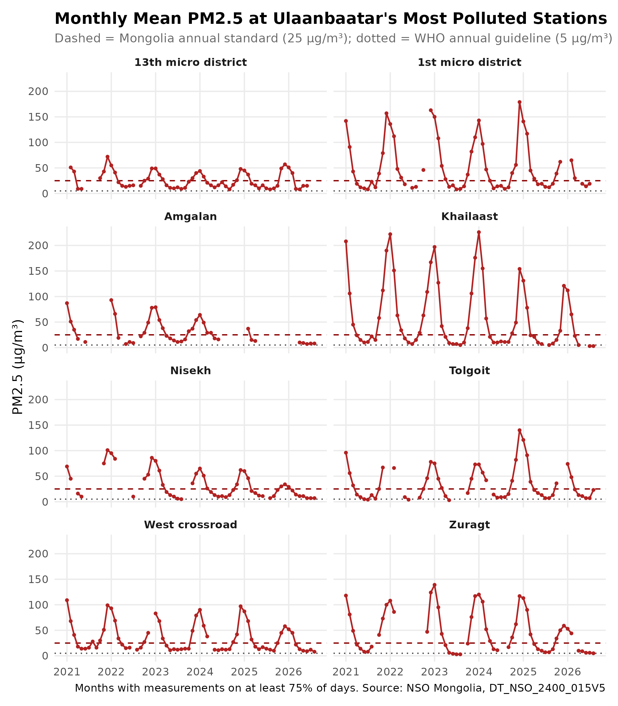
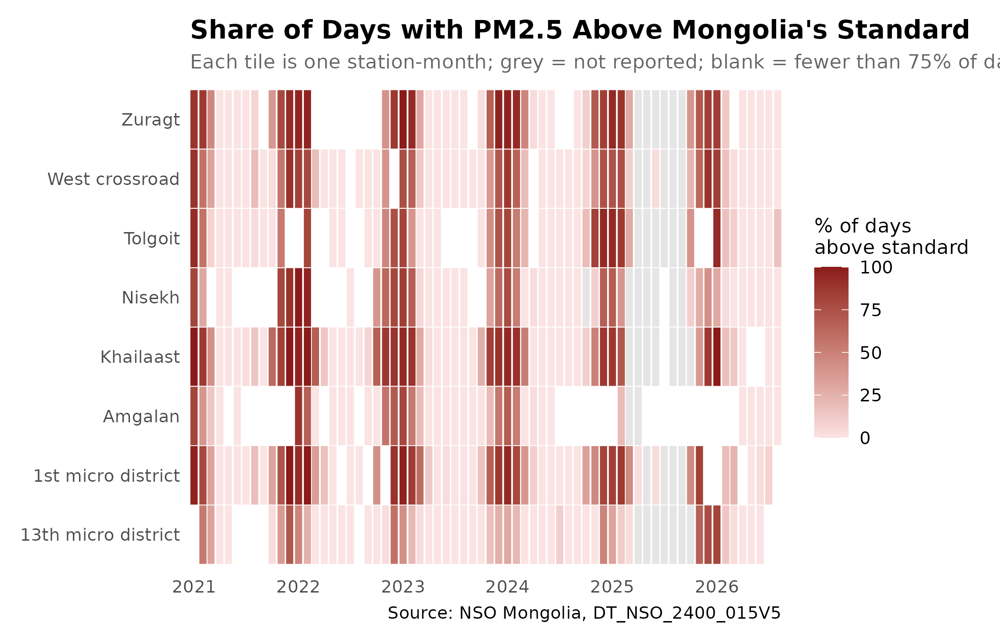
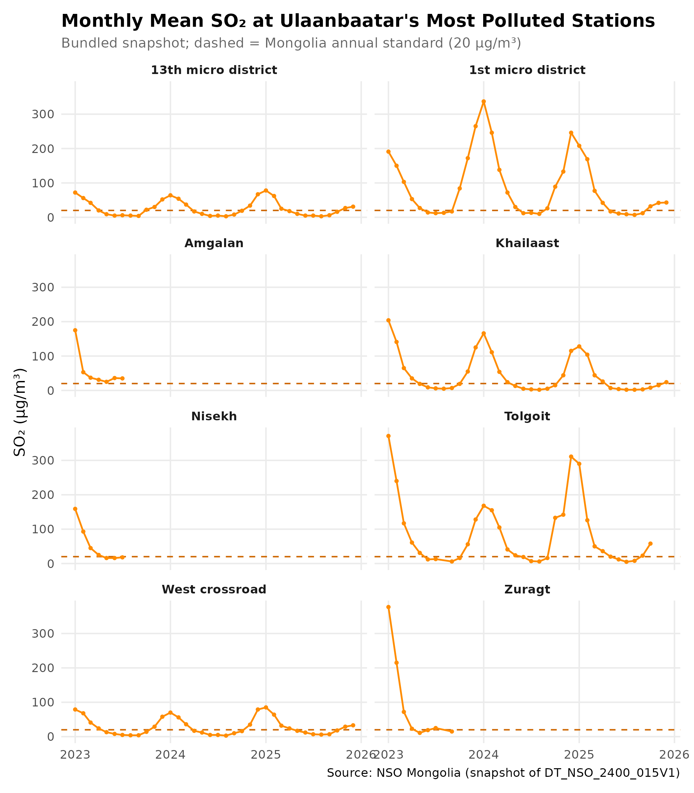
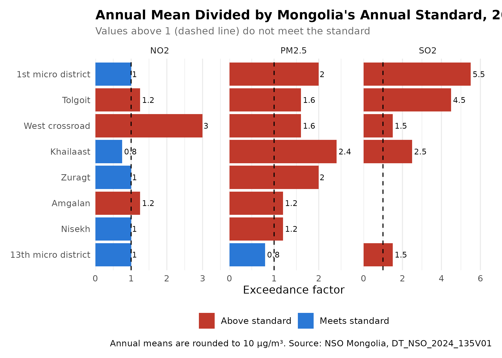
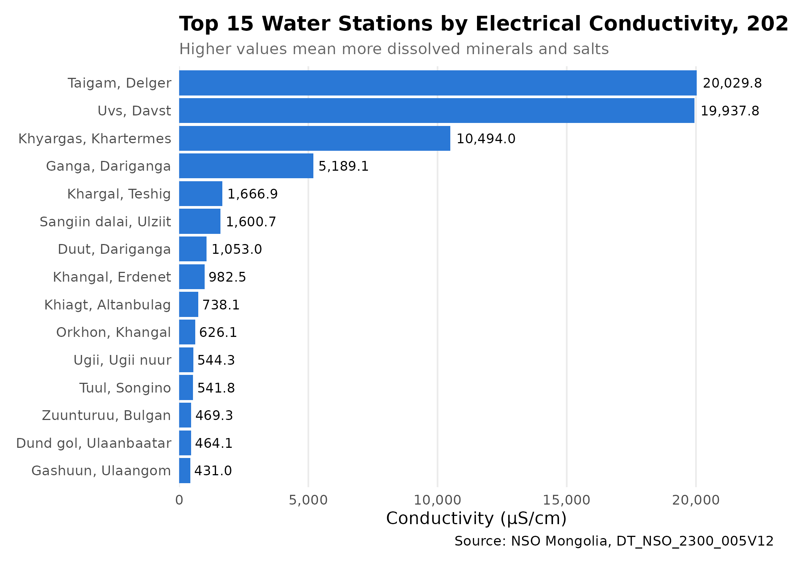
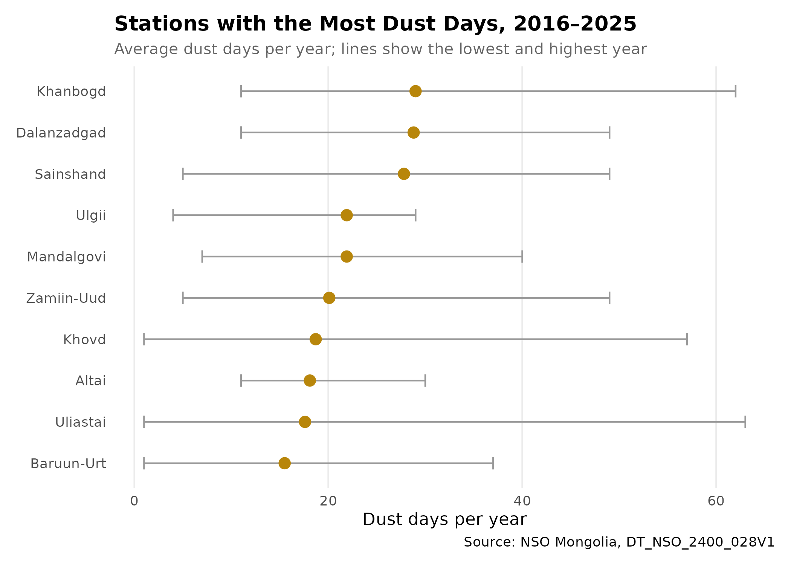
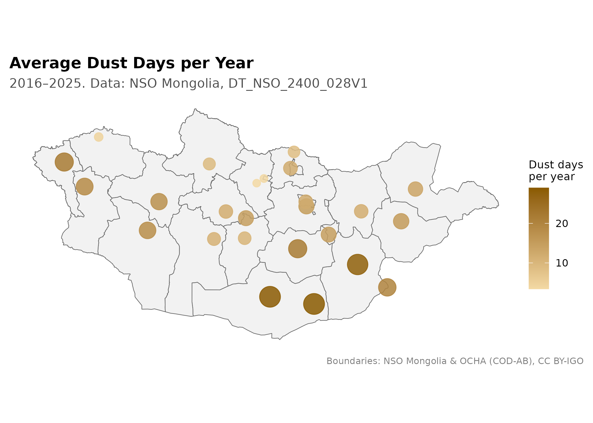

Environmental Data Analysis
Source:vignettes/environmental-surveillance.Rmd
environmental-surveillance.Rmd
library(mongolstats)
library(mongolmaps)
library(dplyr)
library(ggplot2)
library(tidyr)
library(stringr)
nso_options(mongolstats.lang = "en")
# Global theme with proper margins to prevent text cutoff
theme_set(
theme_minimal(base_size = 11) +
theme(
plot.margin = margin(10, 10, 10, 10),
plot.title = element_text(size = 13, face = "bold"),
plot.subtitle = element_text(size = 10, color = "grey40"),
legend.text = element_text(size = 9),
legend.title = element_text(size = 10)
)
)Overview
Air pollution is a leading environmental health risk in Mongolia, above all in Ulaanbaatar in winter. NSO publishes measurements from air quality monitoring stations, river and lake water quality stations, and weather stations that count dust days. Station data describe the air or water at one place; they are a starting point for exposure assessment, not a measure of what people breathe or drink.
This guide shows how to:
- Track fine particulate matter (PM2.5) and sulphur dioxide (SO₂) at Ulaanbaatar stations
- Compare annual concentrations with Mongolia’s air quality standards
- Look at river and lake water quality
- Map dust days across the country
Air Quality Monitoring
About the air quality tables
- Annual table (
DT_NSO_2024_135V01): annual mean concentration by station and pollutant, selected byYear.- Monthly station tables (
DT_NSO_2400_015V2for NO₂,DT_NSO_2400_015V5for PM2.5): for each station and month, the monthly average, the monthly maximum, the number of measurement days (“MN by day”), and the percentage of days above the air quality standard. Month codes are not in date order, so map month labels ("YYYY-MM") to codes withnso_dim_values().The NSO catalogue reuses the ids
DT_NSO_2400_015V1(SO₂),V3(CO) andV4(PM10) for unrelated tables in another folder, so those monthly series cannot be fetched by id alone (mongolstats warns about the ambiguity). This vignette uses a snapshot bundled with mongolstats for monthly SO₂.NSO reports concentrations in mg/m³. We convert them to µg/m³, the unit used by the WHO guidelines (1 mg/m³ = 1,000 µg/m³). Annual means are rounded to 0.01 mg/m³ (10 µg/m³), which is coarse next to standards of 20–40 µg/m³.
Most Polluted Stations
We rank Ulaanbaatar stations by their 2024 annual mean PM2.5. We use 2024 rather than the latest year because several 2025 annual values are exact zeros at stations that reported high levels the year before, which looks like missing data.
air_annual <- tryCatch(
nso_data("DT_NSO_2024_135V01", selections = list(Year = "2024"), labels = "en"),
error = function(e) NULL
)
# Fall back to the bundled snapshot if the API is unavailable
if (is.null(air_annual) || nrow(air_annual) == 0) {
air_annual <- utils::read.csv(
system.file("extdata", "air_annual_cached.csv", package = "mongolstats"),
check.names = FALSE,
stringsAsFactors = FALSE
)
}
air_annual <- air_annual |>
filter(!is.na(value)) |>
mutate(
Station = str_trim(`Station location_en`),
Pollutant = str_trim(Indicator_en),
ug_m3 = value * 1000 # mg/m3 to ug/m3
)
# Ulaanbaatar stations
ub_stations <- c(
"Misheel-Expo center", "West crossroad", "1st micro district",
"13th micro district", "32nd Toirog", "Ofitseruudiin ordon",
"Kharkhorin market", "Urgakh naran micro district", "Dambdarjaa",
"Khailaast", "Tolgoit", "Zuragt", "Amgalan", "Nisekh",
"Tavan buudal", "Bayankhoshuu", "Sharkhad", "100 ail"
)
# Up to 10 Ulaanbaatar stations with the highest annual PM2.5
top_stations <- air_annual |>
filter(Station %in% ub_stations, str_detect(Pollutant, "PM2.5")) |>
slice_max(ug_m3, n = 10, with_ties = FALSE) |>
pull(Station)
top_stations
#> [1] "Khailaast" "Zuragt" "1st micro district"
#> [4] "West crossroad" "Tolgoit" "Amgalan"
#> [7] "Nisekh" "13th micro district"Only 8 Ulaanbaatar stations reported an annual PM2.5 mean for 2024, so all of them are included.
PM2.5: Monthly Trends
Fine particulate matter (PM2.5) is the air pollutant with the strongest evidence of harm: long-term exposure raises the risk of heart and lung disease, lung cancer, and death. We keep only months with measurements on at least 75% of days, a common completeness rule for a valid monthly mean.
# Month codes for months from `from` onward
recent_month_codes <- function(tbl, from = "2021-01") {
mv <- nso_dim_values(tbl, "Month", labels = "en")
mv$code[!is.na(mv$label_en) & mv$label_en >= from]
}
pm25_monthly <- tryCatch(
nso_data(
"DT_NSO_2400_015V5",
selections = list(Month = recent_month_codes("DT_NSO_2400_015V5")),
labels = "en"
),
error = function(e) NULL
)
# Bundled snapshot: fallback for PM2.5 and the only source of monthly SO2
air_cached <- utils::read.csv(
# gzip-compressed to keep the installed package small;
# read.csv() decompresses transparently
system.file("extdata", "air_monthly_cached.csv.gz", package = "mongolstats"),
check.names = FALSE,
stringsAsFactors = FALSE
)
if (is.null(pm25_monthly) || nrow(pm25_monthly) == 0) {
pm25_monthly <- filter(air_cached, str_detect(Indicator_en, "PM2.5"))
}
# One row per station and month, with one column per measure
reshape_monthly <- function(data) {
data |>
mutate(
Station = str_trim(Location_en),
measure = str_extract(Indicator_en, "(Average|Maximum|MN by day|Exceeding percent of AQS)$"),
date = as.Date(paste0(Month_en, "-01"))
) |>
filter(Station %in% top_stations, !is.na(measure)) |>
select(Station, date, measure, value) |>
pivot_wider(names_from = measure, values_from = value) |>
rename(
average = Average, maximum = Maximum,
days_measured = `MN by day`, pct_days_above = `Exceeding percent of AQS`
) |>
mutate(average = average * 1000, maximum = maximum * 1000) # mg/m3 to ug/m3
}
pm25 <- reshape_monthly(pm25_monthly) |>
filter(date >= as.Date("2021-01-01")) |>
mutate(complete = days_measured >= 0.75 * lubridate::days_in_month(date))
pm25_complete <- filter(pm25, complete, !is.na(average))
# For line charts: every station-month, with excluded months as gaps (NA)
# so lines break instead of joining across missing data
pm25_lines <- pm25 |>
complete(Station, date = seq(min(date), max(date), by = "month")) |>
mutate(average = if_else(complete %in% TRUE, average, NA_real_))Of 544 station-months, 455 meet the completeness rule.
pm25_lines |>
ggplot(aes(x = date, y = average)) +
geom_hline(yintercept = 25, linetype = "dashed", color = "darkred") + # Mongolia annual standard
geom_hline(yintercept = 5, linetype = "dotted", color = "grey30") + # WHO 2021 annual guideline
geom_line(color = "firebrick", linewidth = 0.6) +
geom_point(color = "firebrick", size = 0.8) +
facet_wrap(~Station, ncol = 2) +
scale_x_date(date_breaks = "1 year", date_labels = "%Y") +
scale_y_continuous(limits = c(0, NA)) +
labs(
title = "Monthly Mean PM2.5 at Ulaanbaatar's Most Polluted Stations",
subtitle = "Dashed = Mongolia annual standard (25 µg/m³); dotted = WHO annual guideline (5 µg/m³)",
x = NULL,
y = "PM2.5 (µg/m³)",
caption = "Months with measurements on at least 75% of days. Source: NSO Mongolia, DT_NSO_2400_015V5"
) +
theme(strip.text = element_text(face = "bold"), panel.grid.minor = element_blank())
The reference lines are for annual means, so they give scale rather than a test: compliance is judged on the annual mean (next section), and a monthly mean above the line marks a polluted month, not a legal exceedance. Mongolia’s annual PM2.5 standard (MNS 4585:2016) is 25 µg/m³; the WHO’s 2021 guideline is 5 µg/m³. The monthly maximum that NSO also publishes is left out because its definition (highest daily mean or highest single reading) is not documented.
PM2.5: Days Above the Standard
The monthly tables also report the percentage of measured days on which PM2.5 exceeded Mongolia’s air quality standard. Unlike a monthly mean, this compares like with like: daily values against a daily standard.
pm25_complete |>
ggplot(aes(x = date, y = Station, fill = pct_days_above)) +
geom_tile(color = "white", linewidth = 0.2) +
scale_fill_gradient(
low = "#fbe3e3", high = "#8b1a1a", na.value = "grey90",
limits = c(0, 100), name = "% of days\nabove standard"
) +
scale_x_date(date_breaks = "1 year", date_labels = "%Y", expand = c(0, 0)) +
labs(
title = "Share of Days with PM2.5 Above Mongolia's Standard",
subtitle = "Each tile is one station-month; grey = not reported; blank = fewer than 75% of days measured",
x = NULL, y = NULL,
caption = "Source: NSO Mongolia, DT_NSO_2400_015V5"
) +
theme(panel.grid = element_blank())
Key findings: In December–February, the median station-month had 81% of measured days above the PM2.5 standard, and a mean of 89 µg/m³. In June–August, the median was 0% of days, with a mean of 11 µg/m³. Exposure is concentrated in the heating season, when household coal and wood stoves, heating plants and temperature inversions combine.
Sulphur Dioxide (SO₂)
SO₂ comes mainly from burning coal, so it tracks fuel use for heating. Monthly SO₂ comes from the bundled snapshot (see above). Its “measurement days” column counts readings rather than days, so we do not apply the completeness rule here.
so2 <- air_cached |>
filter(str_detect(Indicator_en, "Sulphur dioxide")) |>
reshape_monthly() |>
filter(!is.na(average))
so2 |>
ggplot(aes(x = date, y = average)) +
geom_hline(yintercept = 20, linetype = "dashed", color = "darkorange3") + # Mongolia annual standard
geom_line(color = "darkorange", linewidth = 0.6) +
geom_point(color = "darkorange", size = 0.8) +
facet_wrap(~Station, ncol = 2) +
scale_x_date(date_breaks = "1 year", date_labels = "%Y") +
scale_y_continuous(limits = c(0, NA)) +
labs(
title = "Monthly Mean SO₂ at Ulaanbaatar's Most Polluted Stations",
subtitle = "Bundled snapshot; dashed = Mongolia annual standard (20 µg/m³)",
x = NULL,
y = "SO₂ (µg/m³)",
caption = "Source: NSO Mongolia (snapshot of DT_NSO_2400_015V1)"
) +
theme(strip.text = element_text(face = "bold"), panel.grid.minor = element_blank())
Seasonal pattern: Mean SO₂ in December–February is 3 to 29 times the June–August mean, depending on the station (median 13 times). This swing, larger than for PM2.5, points to coal burning for heating as the main winter source.
Annual Means Against the Standards
The exceedance factor is the annual mean divided by Mongolia’s annual standard (MNS 4585:2016). A factor above 1 means the station did not meet the standard.
# Mongolia's annual standards (MNS 4585:2016), ug/m3
annual_standard <- c("PM2.5" = 25, "SO2" = 20, "NO2" = 40)
compliance <- air_annual |>
filter(Station %in% top_stations) |>
mutate(
Pollutant_Type = case_when(
str_detect(Pollutant, "PM2.5") ~ "PM2.5",
str_detect(Pollutant, "Sulphur dioxide") ~ "SO2",
str_detect(Pollutant, "Nitrogen dioxide") ~ "NO2",
.default = NA_character_
)
) |>
filter(!is.na(Pollutant_Type)) |>
mutate(
Standard = annual_standard[Pollutant_Type],
Exceedance_Factor = ug_m3 / Standard,
Status = if_else(Exceedance_Factor > 1, "Above standard", "Meets standard")
)
compliance |>
ggplot(aes(x = Exceedance_Factor, y = reorder(Station, Exceedance_Factor), fill = Status)) +
geom_col() +
geom_vline(xintercept = 1, linetype = "dashed", color = "black") +
geom_text(aes(label = round(Exceedance_Factor, 1)), hjust = -0.15, size = 2.8) +
facet_wrap(~Pollutant_Type, scales = "free_x") +
scale_fill_manual(values = c("Meets standard" = "#2a78d6", "Above standard" = "#c0392b"), name = NULL) +
scale_x_continuous(expand = expansion(mult = c(0, 0.2))) +
labs(
title = "Annual Mean Divided by Mongolia's Annual Standard, 2024",
subtitle = "Values above 1 (dashed line) do not meet the standard",
x = "Exceedance factor", y = NULL,
caption = "Annual means are rounded to 10 µg/m³. Source: NSO Mongolia, DT_NSO_2024_135V01"
) +
theme(legend.position = "bottom", panel.grid.major.y = element_blank())
Results: In 2024, 7 of 8 stations exceeded the PM2.5 standard (up to 2.4 times), 5 of 5 exceeded the SO₂ standard (up to 5.5 times), and 3 of 8 exceeded the NO₂ standard. Because annual means are rounded to 10 µg/m³, a factor near 1 cannot separate compliance from exceedance: a reported 20 µg/m³ of PM2.5 could be anywhere from 15 to 25. All stations remain far above the WHO’s 2021 annual PM2.5 guideline of 5 µg/m³.
Water Quality Monitoring
NSO publishes river and lake water quality by station. We look first at electrical conductivity, a measure of dissolved minerals and salts.
water <- nso_data("DT_NSO_2300_005V12", selections = list(), labels = "en") |>
filter(!is.na(value)) |>
mutate(
Station = str_trim(`Station location_en`),
Indicator = str_trim(Indicator_en)
)
water_year <- max(water$Year_en)
conductivity <- water |>
filter(str_detect(Indicator, "Electrical conductivity")) |>
slice_max(order_by = value, n = 15)
conductivity |>
ggplot(aes(x = value, y = reorder(Station, value))) +
geom_col(fill = "#2a78d6") +
geom_text(aes(label = scales::label_comma()(value)), hjust = -0.1, size = 3) +
scale_x_continuous(labels = scales::label_comma(), expand = expansion(mult = c(0, 0.15))) +
labs(
title = paste0("Top 15 Water Stations by Electrical Conductivity, ", water_year),
subtitle = "Higher values mean more dissolved minerals and salts",
x = "Conductivity (µS/cm)", y = NULL,
caption = "Source: NSO Mongolia, DT_NSO_2300_005V12"
) +
theme(panel.grid.major.y = element_blank(), panel.grid.minor = element_blank())
The highest values, at Taigam, Uvs, and Khyargas, are lakes. Lakes in closed basins with no outflow, such as Uvs and Khyargas in western Mongolia, are naturally salty, because water leaves by evaporation and the salts stay behind. Conductivity has no health-based limit and does not by itself indicate pollution. To look for pollution, use indicators of organic waste and sewage, such as biochemical oxygen demand (BOD₅) and ammonium nitrogen (NH₄-N).
The Tuul River Through Ulaanbaatar
tuul <- water |>
filter(str_starts(Station, "Tuul")) |>
mutate(Indicator = case_when(
str_detect(Indicator, "BOD5") ~ "BOD5 (mg/L)",
str_detect(Indicator, "NH4-N") ~ "NH4-N (mg/L)",
str_detect(Indicator, "Water quality index") ~ "Water quality index",
.default = NA_character_
)) |>
filter(!is.na(Indicator)) |>
select(Station, Indicator, value) |>
pivot_wider(names_from = Indicator, values_from = value) |>
arrange(`NH4-N (mg/L)`)
knitr::kable(tuul, caption = paste0("Tuul River stations, ", water_year))| Station | BOD5 (mg/L) | NH4-N (mg/L) | Water quality index |
|---|---|---|---|
| Tuul, Uubulan | 2.1 | 0.13 | 0.29 |
| Tuul, Zaisan | 2.1 | 0.14 | 0.29 |
| Tuul, Zaamar | NA | 0.34 | 0.59 |
| Tuul, Lun | 5.3 | 0.51 | 1.23 |
| Tuul, Altanbulag | 6.0 | 1.38 | 1.12 |
| Tuul, Songino | 93.5 | 8.20 | 10.29 |
At Zaisan, in the south of Ulaanbaatar, the Tuul has a BOD₅ of 2.1 mg/L and ammonium of 0.14 mg/L. At Songino, downstream and west of the city, these rise to 93.5 and 8.2 mg/L. This gradient is consistent with urban wastewater entering the river as it passes the city, and it matters for anyone using river water downstream for livestock, irrigation or recreation. A single year of measurements per station cannot show trends; check other years before drawing conclusions.
Dust Days
Dust storms carry coarse particles (PM10) and are linked to respiratory and cardiovascular illness. Dust is most frequent in the Gobi and steppe regions in spring. Dust days vary a lot from year to year, so we average over 10 years rather than ranking a single year. NSO leaves a cell blank when a station had no dust days in a month, and a few months are missing from the table altogether (mostly summer months); we count both as zero.
dust <- nso_data("DT_NSO_2400_028V1", selections = list(), labels = "en") |>
mutate(
Station = str_trim(`Station location_en`),
year = as.integer(substr(Month_en, 1, 4))
)
# The last 10 calendar years before the current, partial year
dust_years <- sort(unique(dust$year)) |>
head(-1) |>
tail(10)
# Blank cells, and the few months missing from the table altogether, are
# taken to mean no dust days and count as zero
dust_annual <- dust |>
filter(year %in% dust_years) |>
summarise(dust_days = sum(value, na.rm = TRUE), .by = c(Station, year))
dust_summary <- dust_annual |>
summarise(
mean_days = mean(dust_days),
min_days = min(dust_days),
max_days = max(dust_days),
.by = Station
) |>
arrange(desc(mean_days))
dust_summary |>
slice_max(mean_days, n = 10) |>
ggplot(aes(x = mean_days, y = reorder(Station, mean_days))) +
geom_errorbar(aes(xmin = min_days, xmax = max_days), width = 0.3, color = "grey60", orientation = "y") +
geom_point(color = "#b8860b", size = 3) +
labs(
title = paste0("Stations with the Most Dust Days, ", min(dust_years), "–", max(dust_years)),
subtitle = "Average dust days per year; lines show the lowest and highest year",
x = "Dust days per year", y = NULL,
caption = "Source: NSO Mongolia, DT_NSO_2400_028V1"
) +
theme(panel.grid.major.y = element_blank(), panel.grid.minor = element_blank())
The three dustiest stations, Khanbogd, Dalanzadgad, and Sainshand, average 28 to 29 dust days a year. The range bars show how much a single year can mislead: the same station can have a handful of dust days one year and several dozen the next.
Mapping Dust Days
The weather stations are in towns, so mongolmaps’ settlement points can place them on a map. Station names are matched to the capital and aimag centres first, then to soum centres where the name is unique.
settlements <- mn_settlements() |>
mutate(rank = match(type, c("capital", "aimag_centre", "soum_centre")))
# Khentii's aimag centre, Undurkhaan, was renamed Chinggis city in 2013
dust_points <- dust_summary |>
mutate(name = if_else(Station == "Undurkhaan", "Chingis", Station)) |>
inner_join(settlements, by = join_by(name), relationship = "one-to-many") |>
# Keep the highest-ranked match; drop names shared by several soum centres
filter(rank == min(rank), .by = Station) |>
filter(n() == 1, .by = Station) |>
sf::st_as_sf()
unplaced <- setdiff(dust_summary$Station, dust_points$Station)
mn_map(mn_aimags(), title = "Average Dust Days per Year") +
geom_sf(data = dust_points, aes(size = mean_days, color = mean_days), alpha = 0.85) +
scale_color_gradient(low = "#f3d9a4", high = "#8a5a00", name = "Dust days\nper year") +
scale_size_area(max_size = 8, guide = "none") +
labs(subtitle = paste0(min(dust_years), "–", max(dust_years), ". Data: NSO Mongolia, DT_NSO_2400_028V1"))
4 station(s) could not be placed from settlement names (Tosontsengel, Khatgal, Zuunkharaa, and Baruunkharaa). For exposure studies, use the weather stations’ own coordinates from the National Agency for Meteorology and Environmental Monitoring.
Next Steps
- Ulaanbaatar districts: See the UB District Analysis for the monitoring network by district
- Discover More Tables: See the Discovery Guide for search techniques
- Mapping: Learn spatial analysis in the Mapping Guide
- Reference: Browse all functions in the Reference
Key Environmental Tables
| Indicator | Table_ID | Geographic_Level |
|---|---|---|
| Annual mean air pollutant concentrations | DT_NSO_2024_135V01 | Station |
| Monthly NO2 by station | DT_NSO_2400_015V2 | Station |
| Monthly PM2.5 by station | DT_NSO_2400_015V5 | Station |
| Water quality | DT_NSO_2300_005V12 | Station |
| Dust days | DT_NSO_2400_028V1 | Station |
| Forest fires | DT_NSO_2400_005V1 | Aimag |